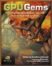

|
Thank you for purchasing GPU Gems: Programming Techniques, Tips, and Tricks for Real-Time Graphics. This CD contains sample code and demonstrations for many of the book's chapters, as provided by the contributors. Updates and additional material can be found on the book's Web site, http://developer.nvidia.com/GPUGems. CD Table of Contents In the list below, each chapter that has an accompanying code sample or demonstration is linked to the corresponding ZIP file, installer EXE, movie clip, or folder containing the unzipped data. In general, a ZIP file is present only if the unzipped folder would not have fit on the CD. Where possible, the contributors have included an executable version of their sample in addition to source code.
|
|
 |
Natural Effects - Effective Water Simulation from Physical Models- Rendering Water Caustics - Skin in the "Dawn" Demo - Animation in the "Dawn" Demo - Fire in the "Vulcan" Demo - Rendering Countless Blades of Waving Grass - Simulating Diffraction |

|
Lighting and Shadows - Efficient Shadow Volume Rendering- Omnidirectional Shadow Mapping - Generating Soft Shadows Using Occlusion Interval Maps |
|
Materials - Image-Based Lighting |
|
|
Image Processing - Color Controls- Depth of Field: A Survey of Techniques - High-Quality Filtering - The OpenEXR File Format - A Framework for Image Processing |
|

|
Performance and Practicalities - Converting Production RenderMan Shaders to Real-Time- Using FX Composer - Integrating Hardware Shading into Cinema 4D |

|
Beyond Triangles - A Toolkit for Computation on GPUs- Fast Fluid Dynamics on the GPU - Real-Time Stereograms - Applying Real-Time Shading to 3D Ultrasound Visualization |
System Requirements
The system requirements for each chapter's sample vary widely, but for optimal performance, we recommend that you use an NVIDIA GeForce FX, NVIDIA Quadro FX, or newer graphics processor. In addition, you may need to upgrade your graphics driver. You can find the latest graphics drivers here. You will need Microsoft Visual Studio to open up some of the provided projects. OpenGL, GLUT, and DirectX are also required to view all the examples. Many of the executable demos will run only on PCs running Microsoft Windows.
Legal Terms of Use
No Warranty. THE SOFTWARE AND ANY OTHER MATERIALS PROVIDED BY NVIDIA TO DEVELOPER HEREUNDER ARE PROVIDED “AS IS.” NVIDIA DISCLAIMS ALL WARRANTIES, EXPRESS, IMPLIED OR STATUTORY, INCLUDING, WITHOUT LIMITATION, THE IMPLIED WARRANTIES OF TITLE, MERCHANTABILITY, FITNESS FOR A PARTICULAR PURPOSE AND NONINFRINGEMENT.
Limitation of Liability. NVIDIA SHALL NOT BE LIABLE TO DEVELOPER, DEVELOPER’S CUSTOMERS, OR ANY OTHER PERSON OR ENTITY CLAIMING THROUGH OR UNDER DEVELOPER FOR ANY LOSS OF PROFITS, INCOME, SAVINGS, OR ANY OTHER CONSEQUENTIAL, INCIDENTAL, SPECIAL, PUNITIVE, DIRECT OR INDIRECT DAMAGES (WHETHER IN AN ACTION IN CONTRACT, TORT OR BASED ON A WARRANTY), EVEN IF NVIDIA HAS BEEN ADVISED OF THE POSSIBILITY OF SUCH DAMAGES. THESE LIMITATIONS SHALL APPLY NOTWITHSTANDING ANY FAILURE OF THE ESSENTIAL PURPOSE OF ANY LIMITED REMEDY. IN NO EVENT SHALL NVIDIA'S AGGREGATE LIABILITY TO DEVELOPER OR ANY OTHER PERSON OR ENTITY CLAIMING THROUGH OR UNDER DEVELOPER EXCEED THE AMOUNT OF MONEY ACTUALLY PAID BY THE DEVELOPER TO NVIDIA FOR THE SOFTWARE OR ANY OTHER MATERIALS.
Copyright © 2004 NVIDIA® Corporation. All rights reserved. All company and/or product names may be trademarks and/or registered trademarks of the respective owners with which they are associated.
______________________________________________________________
NVIDIA
Corporation |
2701 San Tomas Expressway
| Santa
Clara, CA 95050 |
(408)-486-2000